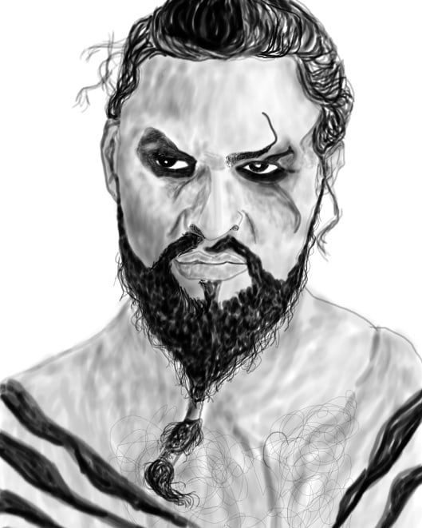
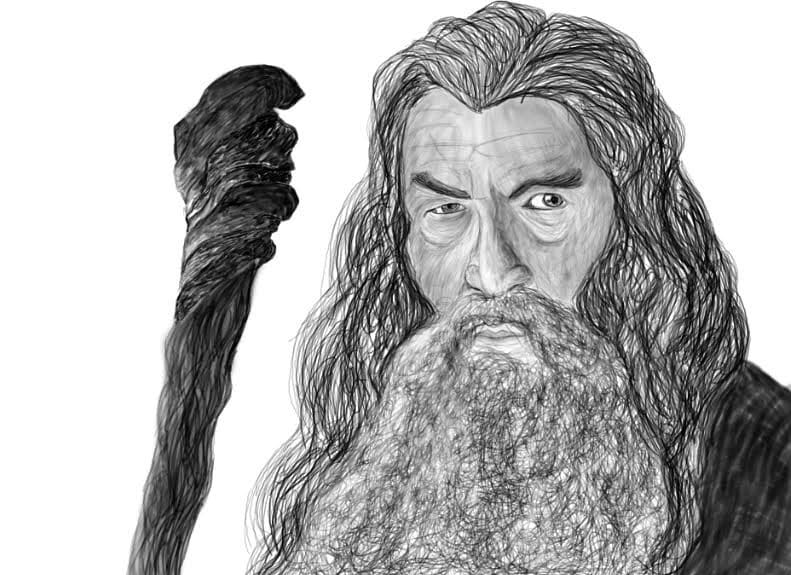
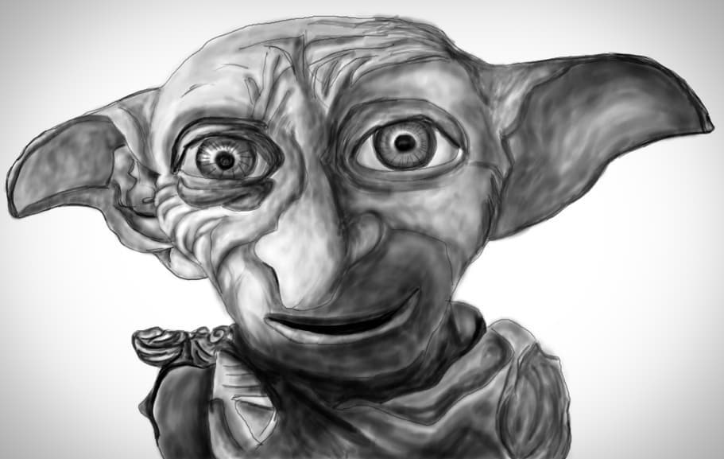
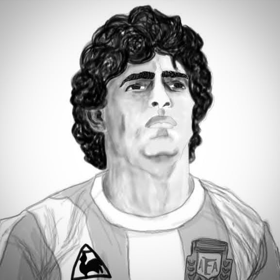
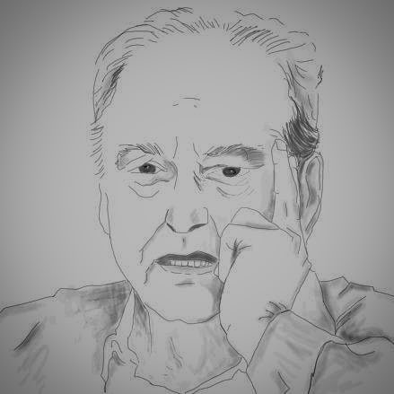
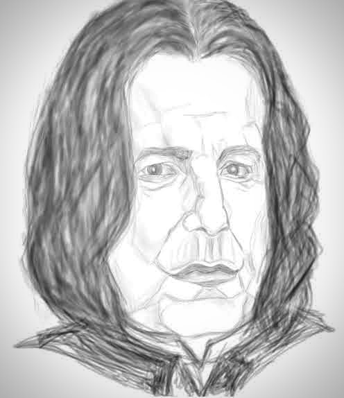
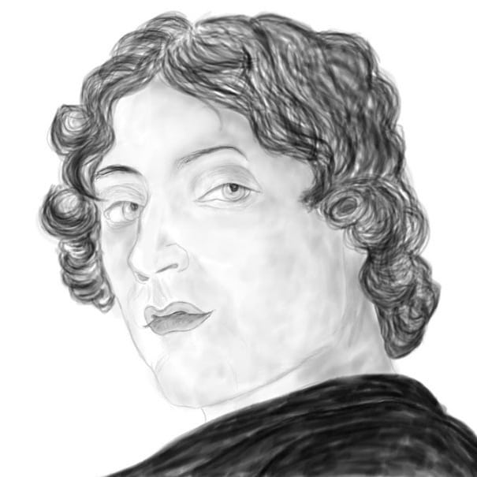
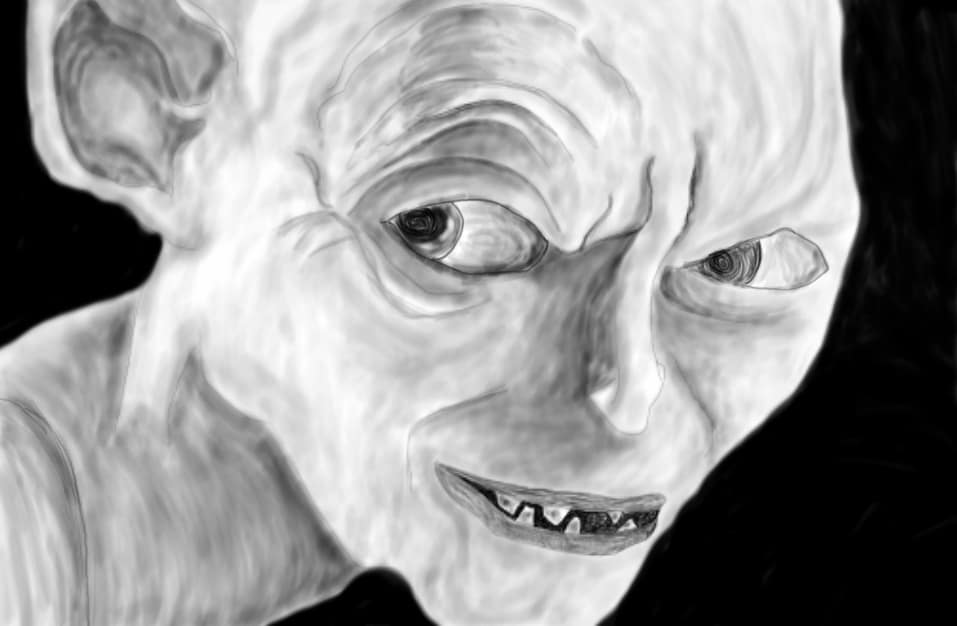
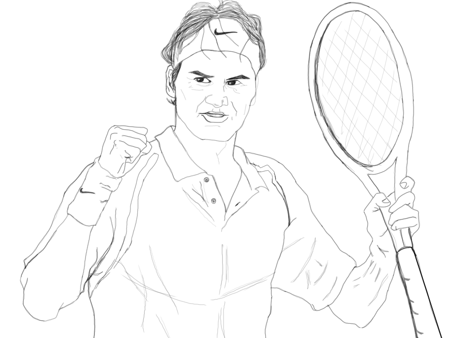

About MeI am Abir Bhattacharya. I am from Kolkata, West Bengal in India and painting is one of the many things I do when I want a break from my daily life. I have been painting for long time now and recently started digital sketches. Here are some of my works I hope you will enjoy them. My Academic Career
1) School: National Gems Higher Secondary School |
Khal DrogoDrogo is a khal or warlord of the Dothraki, the famed nomadic horse-lords of the eastern continent beyond the Narrow Sea. The Dothraki are fierce warriors, skilled in battle, unrelenting in combat and known for savagery towards non-Dothraki. Amongst their own people they have a code of honor, albeit still a harsh and unforgiving one. Drogo was very young to have his own khalasar, particularly such a large one. He is a legendary warrior and has never been defeated in battle. |
 |
|  |
GandalfGandalf the Grey was an Istar (Wizard), sent to Middle-earth in the Third Age to combat the threat of Sauron. He joined Thorin and his company to reclaim the Lonely Mountain from Smaug, convoked the Fellowship of the Ring to destroy the One Ring, and led the Free Peoples in the final campaign of the War of the Ring. |
DobbyDobby (28 June (year unknown) – March, 1998) was a male house-elf who served the Malfoy family. His masters were Dark Wizards who treated him cruelly. In 1992 he disobeyed his masters and tried to warn Harry Potter of the plot to have the Chamber of Secrets reopened. He came to know this via the contact between his masters and Lord Voldemort. At the end of that school year, after Harry had vanquished the memory of Tom Riddle and slayed the basilisk in the Chamber of Secrets, he tricked Lucius Malfoy into freeing Dobby. |
 |
|  |
Diego MaradonaDiego Armando Maradona was an Argentine professional football player and manager. Widely regarded as one of the greatest players in the history of the sport, he was one of the two joint winners of the FIFA Player of the 20th Century award.Maradona's vision, passing, ball control, and dribbling skills were combined with his small stature, which gave him a low centre of gravity allowing him to manoeuvre better than most other players. His presence and leadership on the field had a great effect on his team's general performance, while he would often be singled out by the opposition. |
Soumitra ChattopadhyaySoumitra Chattopadhyay was an Indian film actor, director, playwright, writer and poet. He is best known for his collaborations with director Satyajit Ray, with whom he worked in fourteen films. He was also awarded the Padma Bhushan (2004) and France's highest civilian award Chevalier de la Legion d'honneur. On 5 October 2020, Chatterjee tested positive for COVID-19 and was admitted on 6 October in Belle Vue Clinic, Kolkata.However, he tested negative to the second COVID-19 test conducted on 14 October. In the meantime, his complications made the condition critical and he had to be admitted to ITU. On 15 November 2020, Chatterjee died due to COVID-19. |
 |
|  |
Severus SnapeSeverus Snape (9 January, 1960 – 2 May, 1998) was an English half-blood wizard serving as Potions Master (1981-1996), Head of Slytherin House (1981-1997), Defence Against the Dark Arts professor (1996-1997), and Headmaster (1997-1998) of the Hogwarts School of Witchcraft and Wizardry as well as a member of the Order of the Phoenix and a Death Eater. His double life played an extremely important role in both of the Wizarding Wars against Voldemort. The only child of Muggle Tobias Snape and Gobstones witch Eileen Snape , Severus was raised in the Muggle dwelling of Spinner's End, which was in close proximity to the home of the Evans family, though in a poorer area. He met Lily and Petunia Evans when he was nine and fell deeply in love with Lily, becoming a close friend of hers. |
Sandro BotticelliSandro Botticelli was an Italian painter of the Early Renaissance. Botticelli's posthumous reputation suffered until the late 19th century, when he was rediscovered by the Pre-Raphaelites who stimulated a reappraisal of his work. Since then, his paintings have been seen to represent the linear grace of Early Renaissance painting. |
 |
|  |
SmeagolGollum, originally known as Sméagol (or Trahald), was at first a Stoor, one of the three early Hobbit-types. The name Gollum was derived from the sound of his disgusting gurgling, choking cough.His life was extended far beyond its natural limits by the effects of possessing the One Ring. At the time of his death, Sméagol was about 589 years old, a remarkable age for a creature that was once a hobbit, but he had been deformed and twisted in both body and mind by the corruption of the Ring. |
Roger FedererRoger Federer is a Swiss professional tennis player. He is ranked No. 5 in the world by the Association of Tennis Professionals (ATP). He has won 20 Grand Slam men's singles titles, an all-time record shared with Rafael Nadal. Federer has been No. 1 in the ATP rankings a record total of 310 weeks – including a record 237 consecutive weeks – and has finished as the year-end No. 1 five times.Federer has played in an era where he dominated men's tennis together with Nadal and Novak Djokovic, who have been collectively referred to as the Big Three in reference to their place as three of the greatest male tennis players of all-time.Federer and Stan Wawrinka led the Switzerland Davis Cup team to their first title in 2014, adding to the gold medal they won together in doubles at the 2008 Beijing Olympics. |
 |